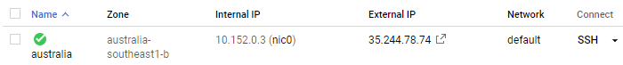
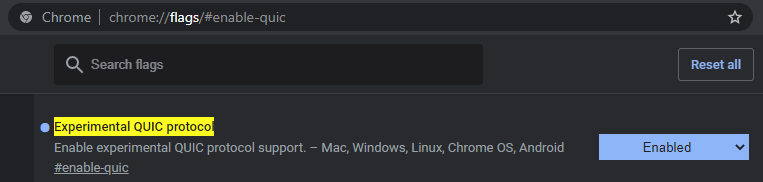
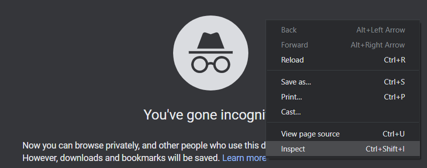
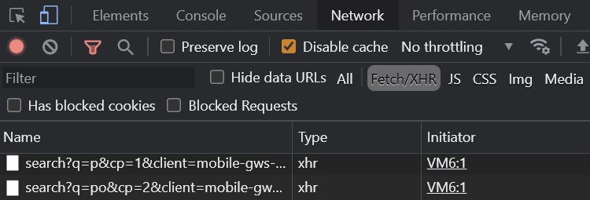
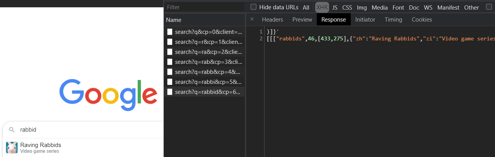

In this lab, we will identify the default network services that are exposed using a variety of Linux tools. Begin by ssh'ing into your Ubuntu course VM.
ss, netstat
ss and netstat are equivalent Linux utilities that can allow a system administrator to perform an inventory of network resources being used on a machine.
Using ChatGPT, find a single command and its command-line flags that, when executed, lists all TCP sockets in a LISTEN state on an IPv4 address, showing the program that is using it. Note that you will need to run this command using sudo since administrator privileges are required to list resources being used by other programs.
- Take a screenshot of the prompt and the command that ChatGPT generates
- Run the command using
sudoand take a screenshot of the output to include in your lab notebook.
Examine the "Local Address" field of the output. Servers such as ssh and nginx typically listen on "0.0.0.0" to accept connections from any interface on the machine (INADDR_ANY when specifying socket). Servers intended for local access listen only on the loopback interface "localhost..." or "127.0.0.1" (INADDR_LOOPBACK) (described via man 7 ip). Following the address, the port number that each socket is listening on is specified. The port is given either as a name for well-known services as listed in /etc/services (e.g. http for port 80) or as a number.
- List a service that can be contacted from any interface on the machine. List a service that can only be contacted by local processes.
Login to linux.cs.pdx.edu
- Run the command again, but do not use
sudoas this is a machine managed by CAT. Include a screenshot of the output. - List the services that this machine provides for external access
lsof
Go back to your Ubuntu VM. The lsof utility lists all file descriptors that are open on the machine across all of its processes. As network connections are accessed via file descriptors, they may also be listed using lsof. On your Ubuntu VM, run the command and view its output.
sudo lsofOne can count the number of open descriptors by piping the output to the word count utility.
sudo lsof | wc -llsof can be used in a similar manner as ss and netstat were used previously.
Using ChatGPT, find a single lsof command and its command-line flags that, when executed, lists all TCP sockets in a LISTEN state on an IPv4 address, showing the program that is using it. Note that you can leverage the conversation in the previous step and simply ask ChatGPT to repeat the task using lsof.
- Take a screenshot of the prompt and the command that ChatGPT generates
- Run the command using sudo and take a screenshot of the output to include in your lab notebook.
In this lab, we'll look at TCP throughput to different parts of the world. From the web console on Google Cloud Platform, go to Compute Engine=>"VM instances".
Create 4 VMs: one in us-west1-b, one in the US East, one in Australia, and one in Europe. For each machine's configuration, use the following:
- Machine type:
e2-medium - Boot disk:
Ubuntu 22.04 - Allow HTTP traffic
While you may do this via the web console, another alternative is to launch them within Cloud Shell via a shell loop.
for i in us-west1-b australia-southeast1-b us-east1-b europe-west1-d
do
gcloud compute instances create vm-$i \
--image-family=ubuntu-2204-lts \
--image-project=ubuntu-os-cloud \
--zone=$i --machine-type=e2-medium
doneAfter the VMs come up, note the internal IP addresses of each instance

iperf
ssh into each VM and install iperf:
sudo apt update sudo apt install iperf -y
For the VMs in the US East, Australia, and Europe, start the iperf server on the HTTP port (80) by performing the following command and leaving it running and the window open:
sudo iperf -s -p 80
On your us-west1-b VM, run iperf against each of the VMs created above by pointing the tool to the VM's internal IP address.
iperf -c <IP address> -p 80
- Show a screenshot of the measured bandwidth available between your us-west1-b VM and each of the other Compute Engine VMs. Explain the relative differences (or lack thereof) in your results.
Exit out of each iperf server via Ctrl+c. Then exit out of all of the Compute Engine VMs and delete them either via the web console or via Cloud Shell using a loop.
for i in us-west1-b australia-southeast1-b us-east1-b europe-west1-d
do
gcloud compute instances delete vm-$i --zone=$i
doneOn any Desktop machine, laptop, or your Ubuntu VM, install Chrome.
Bring up an Incognito window (Ctrl+Shift+N). Then, in the address bar, visit chrome://flags/#enable-quic. If the option exists, find and enable QUIC (HTTP 3).

Open a new tab and then open up Chrome's Developer Tools by right clicking and selecting "Inspect" (Ctrl+Shift+I).

In the address bar, visit the URL http://google.com. (Note: Use the URL exactly as shown with http:// not https:// and google.com not www.google.com). You should see a listing of all of the requests that the browser makes to obtain this page with the first one all the way at the top of the screen. Click on the "Network" tab and scroll up to find the initial requests that are made for the site.
- Take a screenshot of the initial 3 requests that the browser makes for your lab notebook.

For each of the three requests, click on the request and examine the HTTP status code returned as well as the HTTP request and response headers for the request. Answer the following questions:
- What is the URL being requested?
- Explain the HTTP status code that is returned and what the code indicates
- Take a screenshot indicating the version of the HTTP protocol that is used for each request. (Hint: look at the response status line and
alt-svc:HTTP response headers indicating HTTP/2 or HTTP/3).
Find the Location: response header for the two redirections.
- What URL does the first redirection send the browser to?
- What URL does the second redirection send the browser to?
For the last request, examine the HTTP request and response headers for cookies.
- Take a screenshot of the cookies that are sent
- Take a screenshot of the cookies that are received
Asynchronous HTTP requests
While still on the home page for google.com and with the Developer Tools still open, click on Fetch/XHR.

Asynchronous HTTP requests initiated by JavaScript code running on a page will show up under the Fetch/XHR subsection of the Network tab. This is one way to allow interactivity between the client and server without requiring a page reload. To see this in action, type "Portland State" in the search box of the web page.
- Show the requests and responses in the listing. Click on the last request sent, then click on the response to see that its payload has returned the data that is then rendered on the search page similar to what is shown below for "
rabbid"
